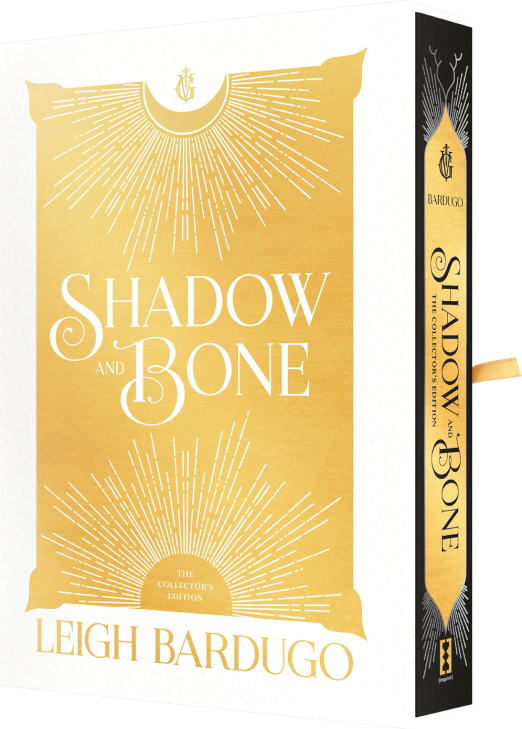
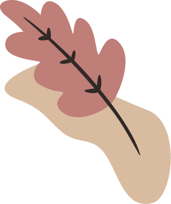

Основні роботи
Трилогія «Гриша»
До даного циклу входить три романи: «Тінь та кістка» (Shadow and Bone), «Облога та штурм» (Siege and Storm) та «Руїна та відновлення» (Ruin and Rising). «Тінь та кістка» була номінована на премію Romantic Times Book Award та отримав 8 місце серед бестселерів New York Times.
Також за даною трилогією було знято серіал від Netflix.
Шістка воронів
Серія з двох романів — «Шістка воронів» (Six of Crows) та «Королівство шахраїв» (Crooked Kingdom). Події розгортаються у тому ж всесвіті, що й попередній цикл, і дана серія книг отримала не менше слави.
Книгу "Шістка воронів" визнано видатною за New York Times та включено до списку 100 найкращих фентезі книг усіх часів за рейтингом журналу Time.
Король шрамів
Також дилогія, куди входять «Король шрамів» (King of Scars) та «Правило вовків» (Rule of Wolves). Так само, як і попередні книги, відноситься до світу «Гриша» (Grishaverse).
